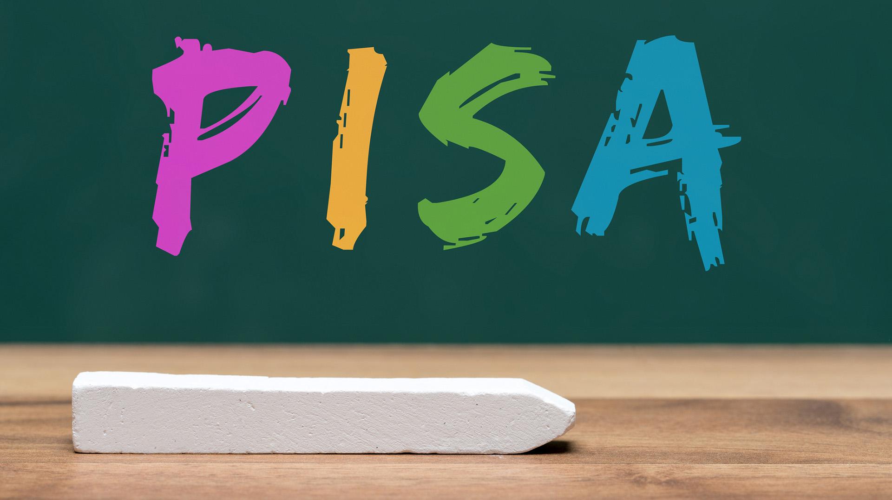
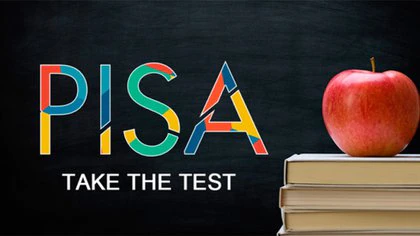
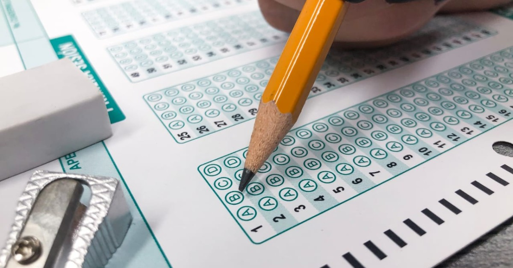
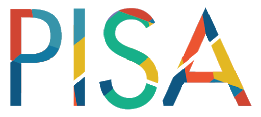

- 
- 
-

- 
El Programa para la Evaluación Internacional de Alumnos (PISA, por sus siglas en inglés), evalúa el desarrollo de las habilidades y conocimientos de los estudiantes de 15 años a través de tres pruebas principales: lectura, matemáticas y ciencias. La Organización para la Cooperación y Desarrollo Económico (OCDE) aplica este examen estandarizado cada tres años, desde el año 2000, y en cada una de las aplicaciones profundiza en una de las tres áreas mencionadas (ICFES, 2016).
PISA se realiza por encargo de la OCDE y con cooperación de diversas comisiones asesoras de un consorcio de la industria examinadora. En los países participantes colaboran también centros nacionales relacionados con la educación siendo, en el caso de España, el Instituto Nacional de Evaluación Educativa (INEE), perteneciente al Ministerio de Educación, Cultura y Deporte (MECD). La creciente diversidad de espacios, medios y lenguajes en los que se produce, circula y emplea información y conocimiento demandan capacidades para aprender no solo en la escuela sino a lo largo de la vida. El examen incluye una sesión cognitiva con una duración de 2 horas y una sesión de cuestionarios con una duración aproximada de 1 hora. En el examen cognitivo, no todos los estudiantes resuelven los mismos problemas. Las soluciones de los estudiantes se registran digitalmente y se envían al centro del proyecto internacional en Australia, donde se evalúan. Ahí, las preguntas y los problemas se califican como “correctos” o “incorrectos”. Según la cantidad de estudiantes que hayan respondido un problema de forma “correcta” se define la “dificultad” del problema. Dependiendo también de la cantidad de problemas que haya resuelto un estudiante, se reconoce un margen de valores de competencia “plausibles” en el mismo. Después se establecen las escalas de dificultad y de competencia, de forma que la puntuación media dentro de los estados de la OCDE sea de 500 y la desviación sea de aproximadamente 100
El Programa para la Evaluación Internacional de Alumnos de la OCDE (PISA, por sus siglas en inglés), tiene por objeto evaluar hasta qué punto los alumnos cercanos al final de la educación obligatoria han adquirido algunos de los conocimientos y habilidades necesarios para la participación plena en la sociedad del saber. PISA saca a relucir aquellos países que han alcanzado un buen rendimiento y, al mismo tiempo, un reparto equitativo de oportunidades de aprendizaje, ayudando así a establecer metas ambiciosas para otros países. Las pruebas de PISA son aplicadas cada tres años. Examinan el rendimiento de alumnos de 15 años en áreas temáticas clave y estudian igualmente una gama amplia de resultados educativos, entre los que se encuentran: la motivación de los alumnos por aprender, la concepción que éstos tienen sobre sí mismos y sus estrategias de aprendizaje. Cada una de las tres evaluaciones pasadas de PISA se centró en un área temática concreta: la lectura (en 2000), las matemáticas (en 2003) y las ciencias (en 2006); siendo la resolución de problemas un área temática especial en PISA 2003. El programa está llevando a cabo una segunda fase de evaluaciones en el 2009 (lectura), 2012 (matemáticas) y 2015 (ciencias).
La participación en PISA ha sido extensa. Hasta la fecha, participan todos los países miembros, así como varios países asociados. Los estudiantes son seleccionados a partir de una muestra aleatoria de escuelas públicas y privadas. Son elegidos en función de su edad (entre 15 años y tres meses y 16 años y dos meses al principio de la evaluación) y no del grado escolar en el que se encuentran. Más de un millón de alumnos han sido evaluados hasta ahora. Además de las pruebas en papel y lápiz que miden la competencia en lectura, matemáticas y ciencias, los estudiantes han llenado cuestionarios sobre ellos mismos, mientras que sus directores lo han hecho sobre sus escuelas. Una vez completada la primera fase de nueve años, PISA continuará el seguimiento del rendimiento de los alumnos en tres áreas temáticas principales, pero también buscará profundizar su introspección sobre las evaluaciones venideras. Hará esto mediante el desarrollo de mejores formas de seguimiento del progreso de los alumnos, haciendo posibles comparaciones más precisas entre el rendimiento y la instrucción, y haciendo uso de evaluaciones informatizadas. Estas innovaciones serán exploradas inicialmente como componentes suplementarios y opcionales de PISA, pero que serán integradas al núcleo del programa en aquellos casos en que se considere apropiado.